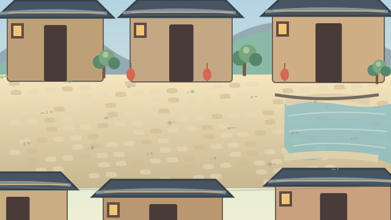
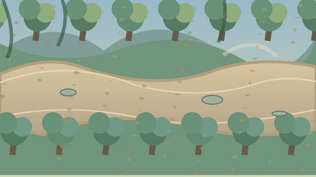
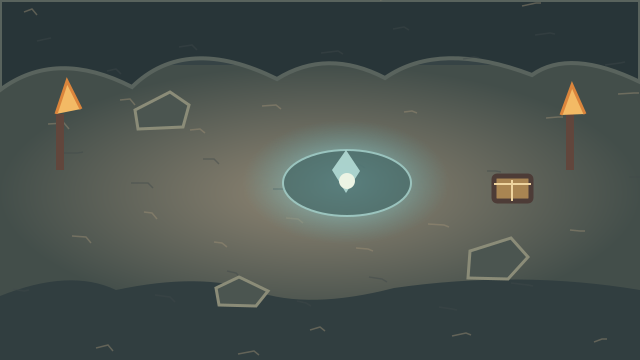

逆命江湖
DEMO
一命入局 · 万象逆行
▶ 开始游戏
▣ 继续游戏
⚙ 游戏设置
▤ 角色图鉴
▥ 剧情回顾
◉ 关于本作
正在检查江湖存档…
逆天改命
再入江湖
这一次，你不再是旁观者。
沈砚 · 逆命之人
初入青石镇

青石镇 · 初入江湖
对话、寻路与江湖奇遇

城外山路 · 单人鏖战
基础剑法与破风一剑

废弃山洞 · 命痕初现
寻得秘籍，窥见棋局
P2 美术验证版：人物主视觉与角色卡已换为国风绘制图；地图实机美术继续迭代中。
✕
返回主菜单
逆
逆命江湖
Q版武侠 RPG · 第一章 · 青石镇篇
Q版江湖 · v0.2
返回首页
点击地面移动 · 点击人物交谈 · 点击出口切换地图
旁白
点击继续 / Enter / Space
继续 →
⚔ 江湖交锋
山贼
⚔
沈砚
100
对手
54
战斗开始。
基础剑法 · 攻击
破风一剑 · 8内力
疗伤药 ×
2
凝神防御
背包
关闭